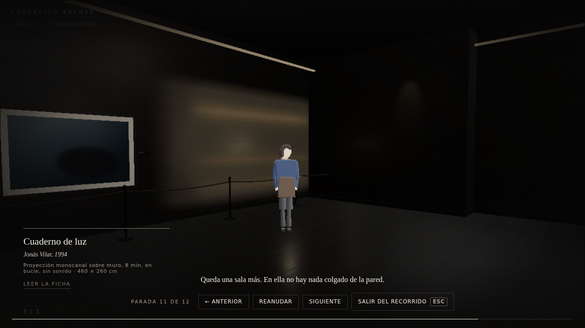
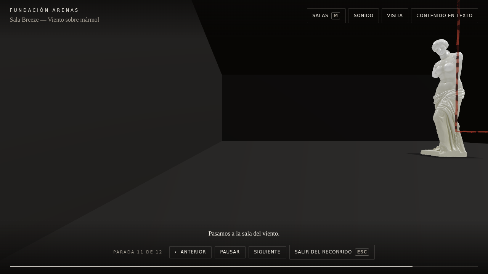
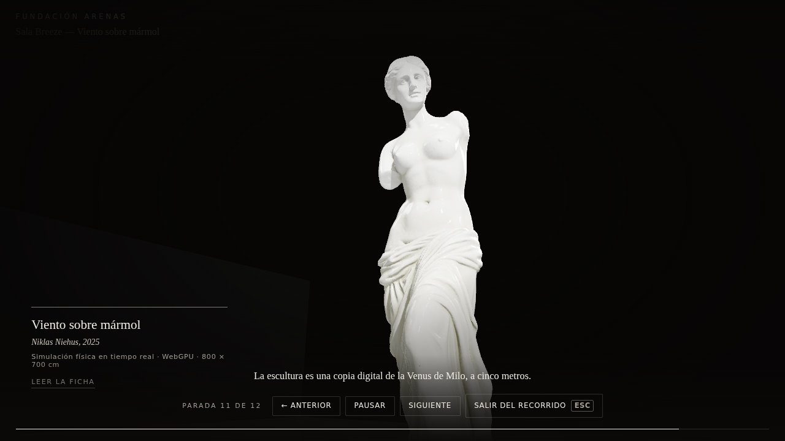
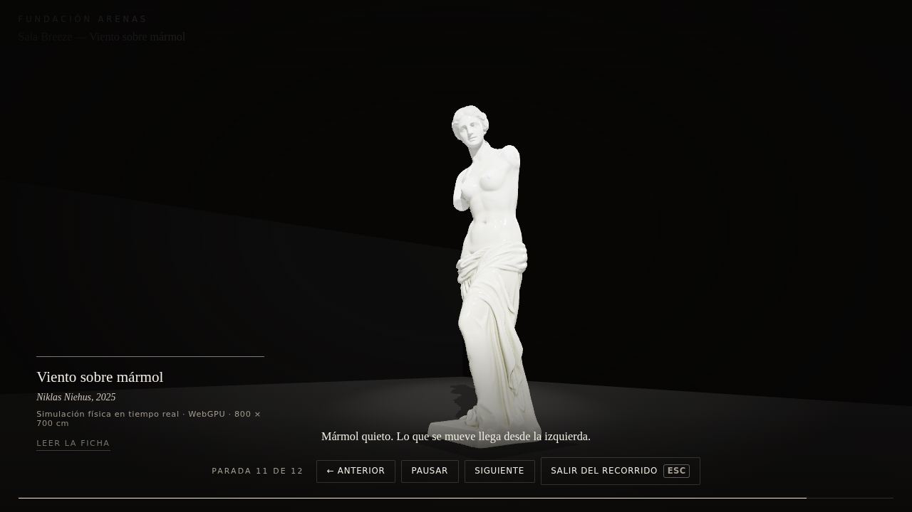
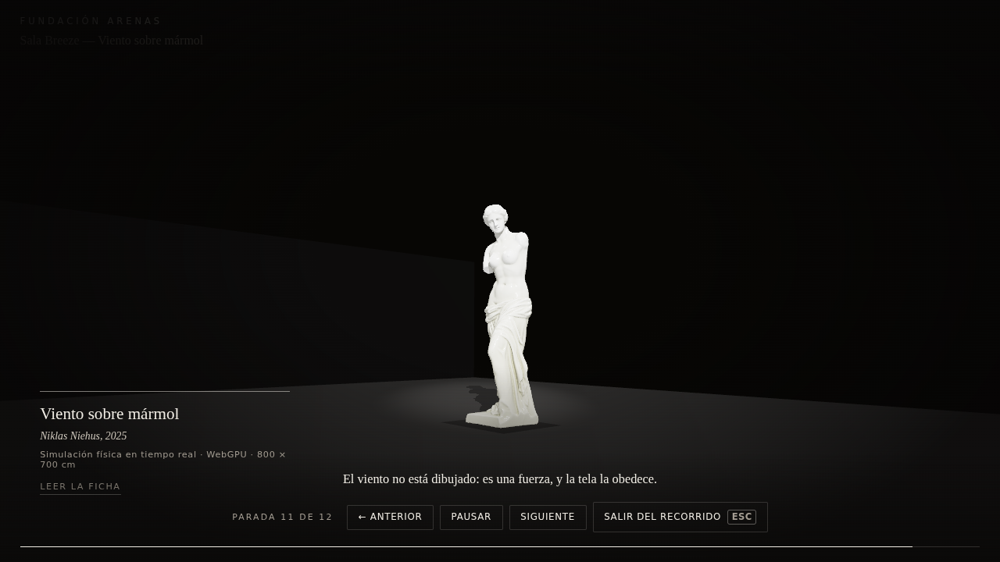

Una sola ejecución continua. El visitante entra por el recorrido comentado, la
presentación pasa al invitado WebGPU, la tela real atraviesa la sala y encuentra la Venus, y el
Museo recupera la presentación al salir. Ningún fotograma procede de otra ejecución.

En Galería B, antes del pasospace.gallery-b · MUSEUM · step.12-lleva-breezeguía 1 · pasos — · YAVG 30.2189

A · Entrada a la salaspace.breeze · GUEST · step.14-venus-llegadaguía 1 · pasos 19 · YAVG 41.6375

B · Primera lectura de la esculturaspace.breeze · GUEST · step.14-venus-llegadaguía 1 · pasos 26 · YAVG 35.279

C · Atención compartida con la guíaspace.breeze · GUEST · step.15-venus-acompanadaguía 1 · pasos 45 · YAVG 31.9752

D · La tela se acercaspace.breeze · GUEST · step.16-tela-aproximaguía 0 · pasos 63 · YAVG 28.8237E · Colisión, momento centralspace.breeze · GUEST · step.17-colisionguía 0 · pasos 83 · YAVG 28.9132F · La tela sigue y se liberaspace.breeze · GUEST · step.17-colisionguía 0 · pasos 90 · YAVG 28.9132G · Contemplación asentadaspace.breeze · GUEST · step.17-colisionguía 0 · pasos 97 · YAVG 28.9132